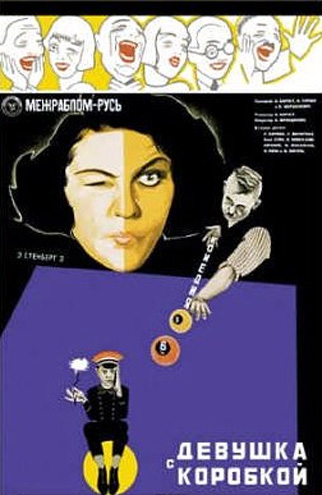
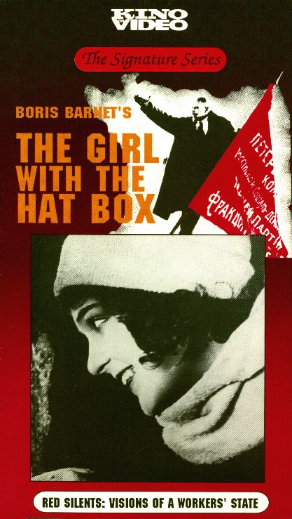

The Girl With The Hat Box (The title on these images, Девушка с Коробкой, is the Russian name for the film The Girl With The Hat Box.) Also, it looks like The Girl With The Hat Box has been released on video with another movie, Outskirts (which my Aunt Yeva is not in). It's interesting that the image for the video tape version I got from Facets Multimedia in Chicago is not in the IMDb.  |